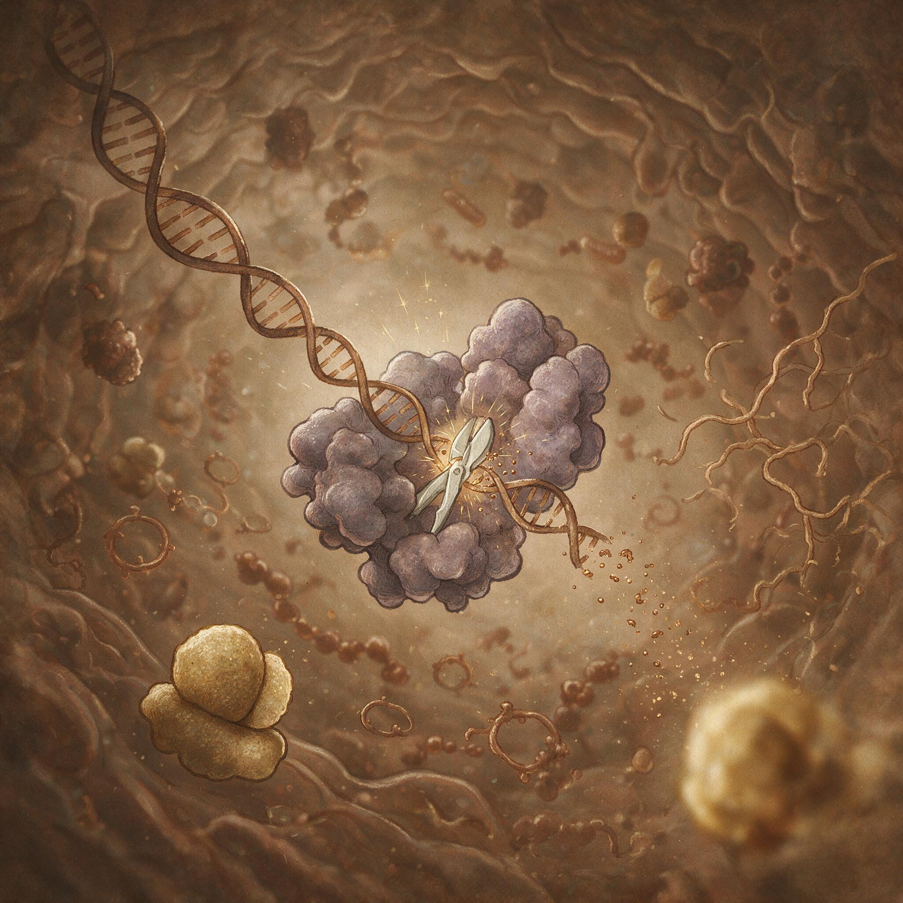

第 7 章
永不停歇的军备竞赛
当新释放的噬菌体颗粒在溶液里扩散，它们的蛋白质外壳在紫外线的照射下微微发颤，每一个颗粒都在寻找下一个可以劫持的宿主——就在这一刻，就在那些正在被噬菌体吸附的细菌细胞内部，另一套完全

细菌与噬菌体攻防的分子战示意图
AI 生成插图，非史实影像。
不同的分子机器已经启动。
这不是被动承受的故事。这是反击。你如果能在这一秒潜入一个正在被噬菌体入侵的大肠杆菌细胞内部，你会看到一场速度惊人的分子动员。在噬菌体DNA刚刚注入、还没有完成转录之前，细胞里已经有蛋白质在扫描这些外来遗传物质。它们不是偶然撞上的。它们是演化打磨了四十亿年的边境巡逻队。
这套巡逻队的正式名称叫限制修饰系统，但我们先用直觉理解它，再给它贴标签。
想象一个军事基地。每一辆己方车辆都挂有特定的电子识别标签，所有进入基地的车辆都必须接受扫描。如果一辆车没有标签，或者标签不对——立即摧毁。细菌的限制修饰系统做的就是这样一件事。它包含两个核心组件：一个是“贴标签的文书官”，名叫甲基化酶；另一个是“执行摧毁的哨兵”，名叫限制性内切酶。
甲基化酶的工作对象是细菌自身的DNA。它会在DNA双螺旋上寻找特定的短序列——比如GAATTC这六个字母——然后在特定的碱基上添加一个甲基基团。这个甲基基团就是一个化学标签，体积小到在电子显微镜下也看不见，但它的存在足以改变一切。它告诉细胞：这是我们的DNA，不要动它。
而限制性内切酶的工作是扫描。它像一把分子剪刀，在细胞里四处游走，遇到DNA就检查。它的识别方式极其精确：它只认特定的短序列，而且只切割那些没有被甲基化标记的序列。这把剪刀的“识别序列”就像一把锁只认特定的钥匙齿形——差一个字母都不行。
当噬菌体将自己的DNA注入细菌时，这些外来遗传物质没有宿主特有的甲基化标记。限制性内切酶遇到它，识别出那个特定的短序列，然后——剪断。不是剪一次。是反复剪。
一旦DNA被剪成碎片，噬菌体的复制计划就在入侵的最初几分钟内被瓦解了。那些原本要劫持整个细胞的基因，现在只是一堆漂浮的核苷酸残骸。这就是细菌对抗噬菌体的第一道防线。
它简单、高效，而且极其古老。地质记录告诉我们，这套系统至少在二十亿年前就已经在运转了。二十亿年——那时候地球大气层里的氧气浓度还只有现在的百分之一，多细胞生物还没有出现，而细菌和噬菌体之间的战争已经进入了精细化对抗的阶段。
但演化的本质决定了：任何防御系统一旦出现，就会立即成为选择压力，迫使对手演化出破解方案。噬菌体的反制策略来得很快——用演化的时间尺度来说，也许只需要几十年。
一些噬菌体获得了编码自身甲基化酶的基因。当它们感染细菌时，在复制自身DNA的过程中，它们也给自己打上与宿主相同的甲基化标记。这相当于入侵者伪造了通行证。限制性内切酶扫描过去，发现甲基化标记齐全，便放行了。噬菌体就这样在宿主眼皮底下完成了复制。
另一些噬菌体走了另一条路。它们通过随机突变，改变了自己DNA上那些原本会被限制酶识别的关键序列。
比如，如果限制酶识别的是GAATTC，噬菌体可能通过点突变将这个序列变成GAATTT——只差一个字母，但分子剪刀的锁孔已经认不出来了。这种策略的代价是噬菌体自身的某些基因序列也被改变了，但如果突变没有破坏关键功能，这种噬菌体就获得了一张全新的“身份证”，在宿主的安全检查中畅通无阻。
面对噬菌体的伪装和规避，细菌并非束手无策。演化给了它们一个强有力的回应：多样性。细菌种群中，不同的个体可以携带不同版本的限制性内切酶基因，每一种识别不同的DNA序列。当噬菌体演化出能够规避某一种限制酶的突变时，携带新型限制酶的细菌个体就获得了生存优势。它们的后代会在种群中扩散，而噬菌体则面临着新的选择压力。
到目前为止，科学家已经在细菌中发现了超过四千种不同的限制性内切酶，每一种识别不同的DNA序列。四千种——这个数字本身就是这场军备竞赛激烈程度的证明。它意味着在过去的二十亿年里，细菌和噬菌体之间的攻防至少经历了四千次重大的策略迭代。
每一次迭代都包含着无数个体的生死存亡，无数基因组的试错与修正。但这还只是原核生物世界的战争。当真核生物在演化的舞台上登场时，它们带来了更复杂的细胞结构、更大的基因组，以及——更精密的防御系统。
要理解真核生物的防御策略，我们需要先理解一个关键差异。细菌的防御主要集中在DNA层面：识别外来DNA，剪碎它，阻止它转录。但真核生物面临着更复杂的威胁。许多真核病毒的生命周期中包含RNA阶段——有些病毒的遗传物质本身就是RNA，有些则在复制过程中会产生RNA中间体。如果只防御DNA，这些RNA病毒就会长驱直入。于是真核生物演化出了一套全新的防御体系：RNA干扰。
这个名字听起来很技术化，但它的原理可以用一个比喻说清楚。想象你是一个警察，正在追捕一个危险的逃犯。你手上有一张逃犯的照片。你的工作不是去街上随机盘查每一个人，而是拿着这张照片，在人群中精准定位那个与照片匹配的人。
RNA干扰机制做的就是这样的事情：它根据病毒的遗传特征——一小段RNA序列——作为“通缉令照片”，然后在细胞内部搜索并摧毁所有匹配的入侵者RNA。这套系统的运作过程是这样的：当病毒在细胞内复制时，它的RNA通常会形成双链结构——这是病毒复制的中间产物，正常细胞几乎不会产生长的双链RNA。细胞里有一种蛋白质叫Dicer，它的工作就是识别这些双链RNA，然后像一把精确的切割器一样，将它们剪成小片段。每个小片段大约21到23个核苷酸长——这个长度刚好足够唯一地识别一个特定的基因序列。
这些小片段被称为小向导RNA。它们是整个防御系统的核心。一旦产生，这些小向导RNA会被装载到另一个蛋白质复合体上——这个复合体叫RISC，但名字不重要，重要的是它的功能。它拿着小向导RNA作为“通缉令”，在细胞内部四处搜索。当它遇到一段RNA序列与小向导RNA精确匹配时，它就会将这段RNA切断并降解。精确匹配——这四个字是关键。RNA干扰的特异性高得惊人。
小向导RNA的21个核苷酸序列，如果中间有哪怕一两个字母不匹配，切割效率就会急剧下降。这意味着这套系统可以精确地针对特定病毒的RNA进行打击，而不会误伤宿主自身的基因表达。
它比限制修饰系统更灵活、更通用，而且不需要为每一种可能的入侵者预先准备特定的分子剪刀。这套系统在植物、真菌和动物中广泛存在，说明它至少起源于十亿年前——那时候真核生物的共同祖先还在原始海洋中游弋。十亿年的演化时间，足以让这套系统打磨得极其高效。
但病毒也没有等待。它们演化出了对抗RNA干扰的武器。这些武器统称为病毒抑制子蛋白——病毒用来抑制RNA干扰的蛋白质。不同的病毒演化出了不同的抑制策略，但它们的共同目标都是让宿主的这套搜索系统瘫痪。
有些抑制子蛋白像海绵。它们会大量结合那些小向导RNA，将它们吸附在自己表面，使它们无法被装载到RISC复合体上。没有小向导RNA，RISC就失去了搜索目标，就像警察丢掉了逃犯照片。
细胞里的小向导RNA数量是有限的，而抑制子蛋白可以大量生产，用数量优势淹没这套防御系统。另一些抑制子蛋白则像破坏钳。它们直接攻击RNA干扰机器的核心组件。比如，有些抑制子蛋白能够与Dicer结合，阻止它切割病毒的双链RNA，从而从源头上掐断小向导RNA的产生。还有些抑制子蛋白直接结合RISC复合体，改变它的结构，使它无法执行切割功能。这相当于入侵者不是去伪造通行证，而是直接去炸毁边境检查站。
还有一种更精巧的策略：有些抑制子蛋白能够结合那些已经被装载了小向导RNA的RISC复合体，然后——不是抑制它，而是劫持它。它们改变RISC的目标特异性，让它去降解宿主自身的某些RNA。这相当于入侵者拿到了警察的通缉令系统，然后输入了假的目标信息，让警察去追捕无辜的市民。
这些策略的精妙程度令人叹为观止。每一个抑制子蛋白的结构都经过了自然选择的反复打磨，它的表面电荷分布、折叠形状、结合位点——每一个细节都是演化计算的结果。
一种病毒可能只编码一个抑制子蛋白，但这个蛋白往往具有多重功能，能够同时干扰RNA干扰途径的多个步骤。而当病毒演化出抑制子蛋白之后，宿主的反击也随之而来。植物中已经发现了一些能够识别病毒抑制子蛋白的免疫受体。这些受体不是去识别病毒的RNA，而是直接识别抑制子蛋白本身——一旦检测到这种蛋白的存在，细胞就会启动更强烈的防御反应，包括程序性细胞死亡。这相当于宿主在边境检查站之外，又设置了一套“反间谍系统”，专门识别那些试图瘫痪检查站的破坏分子。
某些昆虫则演化出了RNA干扰途径的基因重复。它们基因组中有多个拷贝的Dicer基因或RISC组分基因，每个拷贝略有不同。当病毒抑制子蛋白试图结合其中一个版本的蛋白质时，其他版本仍然可以正常工作。这是一种冗余策略——通过备份关键组件来抵御攻击。
而在更长的演化时间尺度上，宿主和病毒之间的这场军备竞赛产生了更影响。那些参与RNA干扰途径的基因，是基因组中演化速度最快的基因之一。
将它们与数百万年前的祖先版本相比，你会发现大量的氨基酸替换——远超过维持基本功能所需的变异水平。这些替换不是随机漂变的结果。它们大多数集中在蛋白质的表面区域，正是与病毒抑制子蛋白发生相互作用的位点。每一个替换都可能代表一次古老的攻防事件：病毒抑制子蛋白演化出了更紧的结合能力，宿主蛋白质则通过改变表面形状来逃避结合。这就是演化军备竞赛的分子化石。你可以在现代生物的基因组中读取这些痕迹，就像地质学家在地层中读取古代地震的记录。每一次氨基酸替换都是一次生存危机的回声，每一次蛋白质结构的变化都是四十亿年对话中的一个音节。
但我们必须在这里停一下，纠正一个容易产生的误解。当我们用“军备竞赛”这个词来描述病毒与宿主的关系时，很容易滑入一种叙事：双方在不断升级，变得越来越“强大”，越来越“先进”。这是一种危险的拟人化。演化没有方向，没有目标，没有“进步”的概念。
当细菌演化出新型限制性内切酶时，它不是在“试图”对抗噬菌体——它只是发生了突变，而这个突变恰好让携带它的个体在噬菌体攻击中存活了下来。当噬菌体演化出甲基化酶伪装时，它也不是在“策划”反制——它只是复制出了错误，而这个错误恰好让它的后代能够感染那些携带新型限制酶的细菌。“恰好”这个词是理解这一切的关键。
演化的创造性不在于有目的的规划，而在于盲目变异与选择性保留的组合。每一个精妙的防御机制背后，是无数失败的变异个体。每一个巧妙的入侵策略背后，是无数未能成功复制的病毒颗粒。我们看到的只是幸存者——那些恰好撞上了有效方案的幸存者。
但这并不削弱这场军备竞赛的壮观程度。恰恰相反。正是因为它没有导演、没有剧本、没有目的论，它才更加令人敬畏。四十亿年，无数代的生死更替，盲目的变异与无情的自然选择，最终产生了限制性内切酶的精确定位能力、RNA干扰的搜索引擎逻辑、病毒抑制子蛋白的多重反制策略。
这些分子机制的精巧程度，超过了人类工程师设计的任何纳米机器。而它们不是被设计出来的——它们是从混沌中涌现出来的。
这场军备竞赛还有一个常常被忽视的维度：它的生态后果。当一种细菌演化出新的限制修饰系统时，它获得了对某些噬菌体的抗性。在短期内，这似乎是一种纯粹的收益。但演化账本从来不是单页的。维持限制修饰系统需要能量和物质——细菌必须合成甲基化酶和限制性内切酶，必须承担这些蛋白质可能偶尔误伤自身DNA的风险。更重要的是，获得了新防御能力的细菌，并不一定在所有环境中都更具竞争力。在噬菌体压力高的环境中——比如富含有机物的近海海水，那里每毫升有上亿个噬菌体——拥有强大的限制修饰系统是生存的前提。
但在噬菌体压力低的环境中，维持这些系统的成本可能超过收益。于是细菌种群中会出现动态平衡：一部分个体携带完整的防御系统，另一部分个体则舍弃了这些基因，将节省下来的能量用于更快的生长和分裂。这种动态平衡本身又在塑造噬菌体的演化方向。
当环境中抗性细菌比例高时，能够规避限制修饰系统的噬菌体获得优势。当敏感细菌比例上升时——它们往往生长更快——常规噬菌体又会卷土重来。这不是简单的循环，而是一种持续的、多方向的协同演化。宿主和病毒的种群动态在时间中画出一条复杂的轨迹，每一个时间点的基因频率都是过去所有攻防事件的总和。
如果你站在一升海水旁边，看着那些看不见的颗粒在阳光下闪烁，你很难想象这平静的水体里正在发生着什么。每一秒钟，在这升海水里，大约有三百亿个病毒颗粒在寻找宿主，有数十亿个细菌在进行分子扫描，有限制性内切酶在剪切外来DNA，有小向导RNA在搜索入侵者序列，有抑制子蛋白在瘫痪搜索系统。每一个瞬间都包含着分子层面的生死决断，每一个决定都在微调着整个种群的基因库。
而这还只是细菌和噬菌体的战场。当真核生物——尤其是多细胞动物——加入这场军备竞赛时，局面变得更加复杂。多细胞动物面临着一个细菌和单细胞真核生物不需要担心的问题：如何保护生殖细胞？
一个细菌被噬菌体感染，它死了，它的后代可能携带抗性基因存活下来。但一只动物的生殖细胞如果被病毒感染，整个后代谱系都可能受到影响。
因此，动物演化出了一套专门保护生殖细胞的防御策略——小RNA沉默途径的一个特殊分支，叫做piRNA途径。piRNA途径的运作逻辑与普通的RNA干扰类似，但更加专门化。它在生殖细胞中活跃，专门抑制那些可能通过生殖细胞传播的遗传寄生元件——包括病毒和转座子。
这套系统产生的小RNA比普通的小向导RNA稍长一些，大约24到30个核苷酸，它们与一种叫做Piwi的蛋白质结合，在生殖细胞的基因组中巡逻，沉默任何可疑的外来序列。
这套系统的存在说明了一个重要的事实：病毒与宿主的军备竞赛，不仅发生在个体生存的层面，也发生在代际传递的层面。宿主不仅要保护自己这一代，还要保护遗传信息向下一代的传递。
而病毒——尤其是那些能够整合到宿主基因组中的逆转录病毒——则演化出了在生殖细胞中潜伏的策略，等待合适的时机再激活。
这引出了一个更深层的问题：当病毒将自身基因整合到宿主基因组中，并且这些整合发生在生殖细胞中时，病毒的序列就有可能被传递给宿主的后代。如果整合没有立即杀死宿主，如果这些病毒序列在演化过程中发生了突变、失去了致病性，它们就可能成为宿主基因组中的永久居民。这就是我们在第五章中讨论过的内源性逆转录病毒。
而宿主对这些内源性病毒序列的反应，正是这场军备竞赛最出人意料的转折之一。
宿主不是简单地容忍这些病毒残骸的存在。它们将它们纳入了自己的防御体系。
一些内源性逆转录病毒的蛋白质产物，被宿主改造后用于抵御外源性病毒的入侵。这相当于宿主翻阅了敌人留下的武器手册，学会了制造敌人的武器，然后用来对抗敌人。
这种现象在哺乳动物中尤为常见。绵羊基因组中的一个内源性逆转录病毒包膜基因，现在被用于阻止外源性相关病毒的入侵——它产生的蛋白质占据了细胞表面的受体，让外来的病毒颗粒无法进入。猫的基因组中也有类似的例子。
这些不是罕见的特例，而是普遍现象：宿主与病毒的军备竞赛，不仅产生了防御与反制的螺旋升级，还产生了“缴获武器”式的演化创新。
这场战争没有终点。它不会有和平协议，不会有最终的胜利者。四十亿年来，它一直在进行，以每秒钟数十亿次的分子交锋的频率进行着。每一次交锋都在微调着双方的基因序列，每一次微调都在为下一次交锋埋下伏笔。
而此刻，当你在阅读这段文字时，你身体内部的每一个细胞里，都携带着这场四十亿年战争的遗迹。你的基因组中，百分之八的序列来自远古病毒的整合。你的免疫系统中的一些关键组分，可能是从这些病毒序列改造而来的。你细胞内部的RNA干扰机器，是十亿年前真核生物祖先对抗RNA病毒的防御系统的直系后代。
你不是这场战争的旁观者。你是它的产物。在一捧海水里，在噬菌体颗粒与细菌细胞的无声交锋中，在限制性内切酶扫描外来DNA的瞬间，在小向导RNA携带着通缉令搜索入侵者的时刻——这一切都不是发生在遥远的过去。它正在发生。此刻。永远。
而那些刚刚演化出新型抑制子蛋白的病毒，正在它们新感染的宿主细胞内，测试着这些蛋白质的效能。宿主细胞的RNA干扰机器正在被瘫痪，小向导RNA正在被海绵吸附，RISC复合体正在被破坏钳拆解。病毒完成了这一轮的反制。
但宿主的基因组里，新的突变已经在积累。某个Dicer基因的表面氨基酸刚刚发生了一个替换——这个替换现在还只是一个随机事件，只存在于一个个体、一个细胞中。它还没有经过自然选择的检验。它还只是一个可能性。一个可能性。
这就是这场军备竞赛的燃料。四十亿年来，正是这些可能性——随机的、盲目的、没有方向的——在噬菌体的蛋白质外壳上、在细菌的限制性内切酶上、在小向导RNA的序列上、在抑制子蛋白的结合位点上，不断累积，不断被选择，不断被淘汰，不断被重塑。
而那个刚刚发生的Dicer突变，会不会恰好让病毒抑制子蛋白无法结合？如果会，携带这个突变的宿主细胞将恢复RNA干扰能力，清除入侵的病毒，存活下来，分裂，将这个突变传递给后代。
如果不会，这个细胞将被病毒劫持，裂解，释放出更多的病毒颗粒，而这些病毒颗粒将携带着它们高效的抑制子蛋白，继续寻找下一个宿主。
没有人能预测这一轮交锋的结果。演化本身也不能——它只是在每一个瞬间，从已有的变异中筛选出那些恰好有效的方案。而方案的来源永远是盲目的，永远是不确定的，永远是开放的。
这就是为什么这场军备竞赛永不停歇。不是因为双方都“想要”赢，而是因为变异的源泉永不枯竭。每一次DNA复制都可能产生错误，每一次错误都可能改变蛋白质的结构或功能，每一次改变都可能提供新的攻击或防御手段。
只要生命还在复制自身，变异就会持续产生。只要变异持续产生，自然选择就会持续筛选。只要自然选择持续筛选，军备竞赛就会持续进行。它没有终点。它本身就是生命的状态。